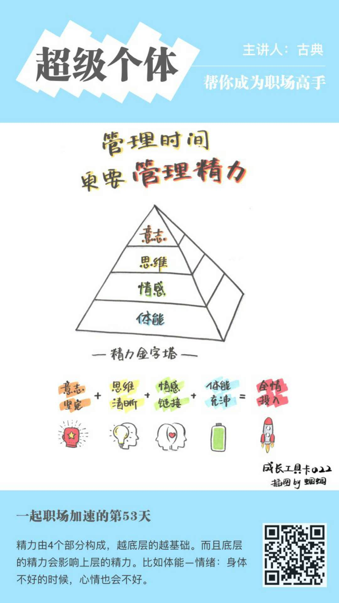

1.不要管理时间, 而是管理精力

金字塔的底层会影响上层的, 体能会影响情感, 情感会影响思维, 思维会影响意志.
所以, 要保持充足的体能. 为什么有些人看起来每天都像打了鸡血一样, 就是人家体力好.
2.钟摆型精力管理方式
体能, 情感, 思维, 意志, 这些都需要钟摆型管理, 用一点补充一点, 电量满满的才能高效运转; 如果直线型消耗经历, 耗尽了再恢复, 其实是恢复不满的.
每个小时的精力需要恢复: 干50分钟休息10分钟, 比干120分钟休息30分钟的恢复效果要好很多;
每天的精力恢复方式: 早上做计划性工作, 上午做创造性工作, 下午沟通性工作, 晚上学习型工作.
很多时候, 个人的直觉是不对的, 比如我以前总是直线型的消耗精力, 然后后面根本补充不回来, 经常发现效率不高, 精力不足.
3.提升精力的方法
首先, 精力金字塔底层的体能要提升, 吃, 睡, 运动, 这3方面都提升上去体能才能提上去: 少吃多餐, 血糖保持稳定高度; 忙里偷闲多休息, 快速回复体力; 有氧运动其实也是帮助大脑休息.
然后, 提升情绪能力, 寻找积极的正向反馈, 激励自己;
规律化生活, 人在做选择的时候会非常消耗经历, 所以要尽量少做选择来保持精力(有原则, 有规律会减少很多决策)
最后, 提升精神动力, 给自己打鸡血, 给自己画饼!
4.如何快速进入状态
仪式感.
自己设计一句话, 一个动作, 命令自己集中注意力. 这个需要重复练习养成习惯!
5.工具
每日三件事, 每天只做三件事, 每件事都要结果化, 产品化, 价值化!
还有一个小确幸, 让人生幸福一下.